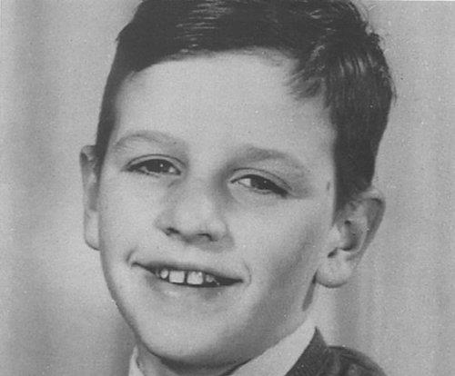
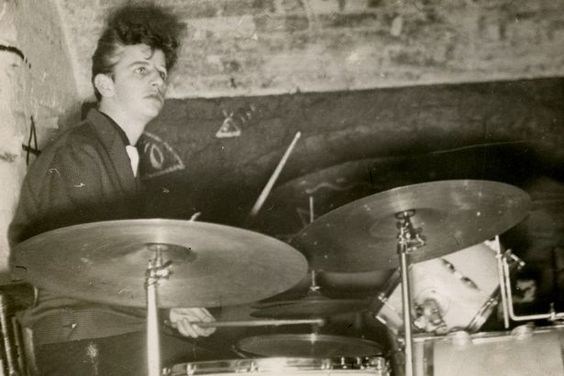
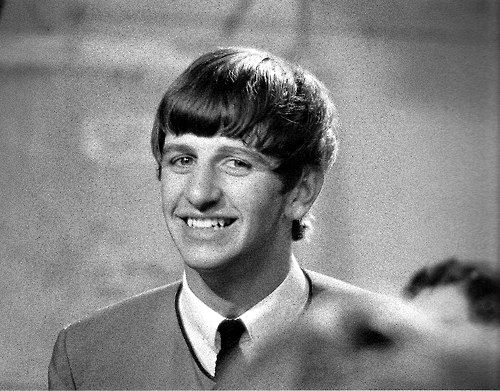
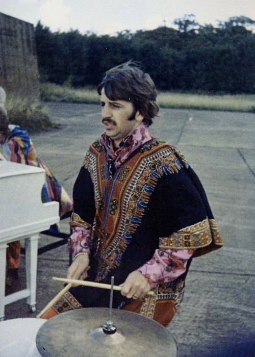
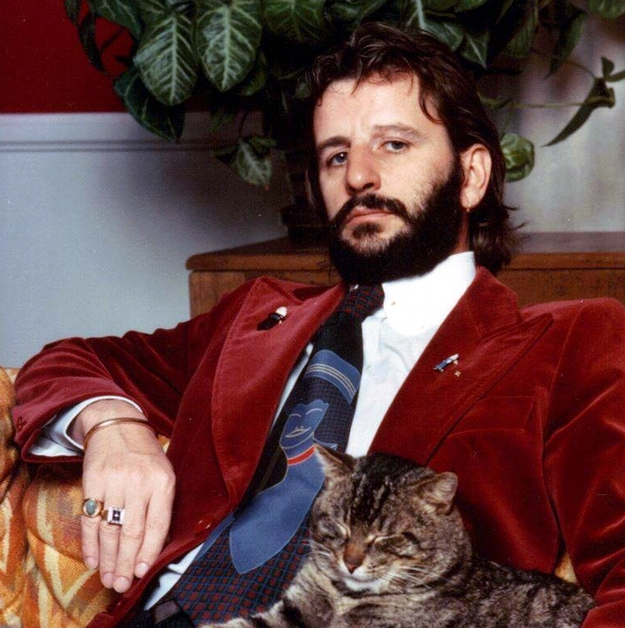
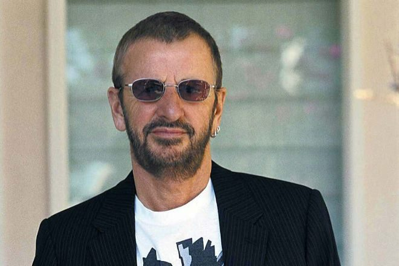

Ringo Starr

Starr occasionally sang lead vocals with the group, usually for one song on each album, including "Yellow Submarine" and "With a Little Help from My Friends". He also wrote and sang the Beatles songs "Don't Pass Me By" and "Octopus's Garden", and is credited as a co-writer of four others.
In addition to the Beatles' films, Starr has acted in numerous others. After the band's break-up in 1970, he released several successful singles including the US top-ten hit "It Don't Come Easy", and number ones "Photograph" and "You're Sixteen". His most successful UK single was "Back Off Boogaloo", which peaked at number two. He achieved commercial and critical success with his 1973 album Ringo, which was a top-ten release in both the UK and the US. Starr has featured in numerous documentaries, hosted television shows, narrated the first two series of the children's television program Thomas & Friends and portrayed "Mr. Conductor" during the first season of the PBS children's television series Shining Time Station. Since 1989, he has toured with thirteen variations of Ringo Starr & His All-Starr Band.
Starr's playing style, which emphasised feel over technical virtuosity, influenced many drummers to reconsider their playing from a compositional perspective. He also influenced various modern drumming techniques, such as the matched grip, tuning the drums lower, and using muffling devices on tonal rings.[4] In his opinion, his finest recorded performance was on the Beatles' "Rain".[5] In 1999, he was inducted into the Modern Drummer Hall of Fame.[6] In 2011, Rolling Stone readers named him the fifth-greatest drummer of all time. He was inducted twice into the Rock and Roll Hall of Fame, as a Beatle in 1988 and as a solo artist in 2015,[7] and appointed a Knight Bachelor in the 2018 New Year Honours for services to music.[8] In 2020, he was cited as the wealthiest drummer in the world, with a net worth of $350 million.
Early life
Richard Starkey was born on 7 July 1940 at 9 Madryn Street in Dingle, an inner-city area of Liverpool. He is the only child of confectioners Richard Starkey (1913–1981) and Elsie Gleave (1914–1987).[10] Elsie enjoyed singing and dancing, a hobby that she shared with her husband, an avid fan of swing.[11] Prior to the birth of their son, whom they called "Richy", the couple had spent much of their free time on the local ballroom circuit, but their regular outings ended soon after his birth.[12] Elsie adopted an overprotective approach to raising her son that bordered on fixation. Subsequently, "Big Ritchie", as Starkey's father became known, lost interest in his family, choosing instead to spend long hours drinking and dancing in pubs, sometimes for several consecutive days.
n an effort to reduce their housing costs, his family moved in 1944 to another neighbourhood in the Dingle, Admiral Grove; soon afterwards his parents separated, and they divorced within the year.[13] Starkey later stated that he has "no real memories" of his father, who made little effort to bond with him, visiting as few as three times thereafter.[14] Elsie found it difficult to survive on her ex-husband's support payments of thirty shillings a week, so she took on several menial jobs cleaning houses before securing a position as a barmaid, an occupation that she held for twelve years.
At the age of six, Starkey developed appendicitis. Following a routine appendectomy he contracted peritonitis, causing him to fall into a coma that lasted days.[16] His recovery spanned twelve months, which he spent away from his family at Liverpool's Myrtle Street children's hospital.[17] Upon his discharge in May 1948, his mother allowed him to stay at home, causing him to miss school.[18] At age eight, he remained illiterate, with a poor grasp of mathematics.[18] His lack of education contributed to a feeling of alienation at school, which resulted in his regularly playing truant at Sefton Park.[19] After several years of twice-weekly tutoring from his surrogate sister and neighbour, Marie Maguire Crawford, Starkey had nearly caught up to his peers academically, but in 1953, he contracted tuberculosis and was admitted to a sanatorium, where he remained for two years.[20] During his stay the medical staff made an effort to stimulate motor activity and relieve boredom by encouraging their patients to join the hospital band, leading to his first exposure to a percussion instrument: a makeshift mallet made from a cotton bobbin that he used to strike the cabinets next to his bed.[21] Soon afterwards, he grew increasingly interested in drumming, receiving a copy of the Alyn Ainsworth song "Bedtime for Drums" as a convalescence gift from Crawford.[22] Starkey commented: "I was in the hospital band ... That's where I really started playing. I never wanted anything else from there on ... My grandparents gave me a mandolin and a banjo, but I didn't want them. My grandfather gave me a harmonica ... we had a piano – nothing. Only the drums.
Starkey attended St Silas, a Church of England primary school near his house where his classmates nicknamed him "Lazarus", and later Dingle Vale Secondary modern school, where he showed an aptitude for art and drama, as well as practical subjects including mechanics.[24] As a result of the prolonged hospitalisations, he fell behind his peers scholastically and was ineligible for the 11-plus qualifying examination required for attendance at a grammar school.[25] On 17 April 1954, Starkey's mother married Harry Graves at the register office on Mount Pleasant, Liverpool.[26] He was an ex-Londoner who had moved to Liverpool following the failure of his first marriage. Graves, an impassioned fan of big band music and their vocalists, introduced Starkey to recordings by Dinah Shore, Sarah Vaughan and Billy Daniels.[27] Graves stated that he and "Ritchie" never had an unpleasant exchange between them; Starkey later commented: "He was great ... I learned gentleness from Harry."[28] After the extended hospital stay following Starkey's recovery from tuberculosis, he did not return to school, preferring instead to stay at home and listen to music while playing along by beating biscuit tins with sticks.
After his return home from the sanatorium in late 1955, Starkey entered the workforce but was lacking in motivation and discipline; his initial attempts at gainful employment proved unsuccessful.[33] In an effort to secure himself some warm clothes, he briefly held a railway worker's job with British Rail, which came with an employer-issued suit. He was supplied with a hat but no uniform and, unable to pass the physical examination, he was laid off and granted unemployment benefits.[34] He then found work as a waiter serving drinks on a day boat that travelled from Liverpool to North Wales, but his fear of conscription into military service led him to quit the job, not wanting to give the Royal Navy the impression that he was suitable for seafaring work.[35] In mid-1956, Graves secured Starkey a position as an apprentice machinist at Henry Hunt and Son, a Liverpool school equipment manufacturer.[36] While working at the facility Starkey befriended Roy Trafford, and the two bonded over their shared interest in music.[37] Trafford introduced Starkey to skiffle, and he quickly became a fervent admirer.
First bands: 1957–1961
Soon after Trafford piqued Starkey's interest in skiffle, the two began rehearsing songs in the manufacturing plant's cellar during their lunch breaks. Trafford recalled: "I played a guitar, and [Ritchie] just made a noise on a box ... Sometimes, he just slapped a biscuit tin with some keys, or banged on the backs of chairs."[37] The pair were joined by Starkey's neighbour and co-worker, the guitarist Eddie Miles, forming the Eddie Miles Band, later renamed Eddie Clayton and the Clayton Squares after a Liverpool landmark.[38] The band performed popular skiffle songs such as "Rock Island Line" and "Walking Cane", with Starkey raking a thimble across a washboard, creating primitive, driving rhythms.[39] Starkey enjoyed dancing as his parents had years earlier, and he and Trafford briefly took dance lessons at two schools. Though the lessons were short-lived, they provided Starkey and Trafford with an introduction that allowed them to dance competently while enjoying nights out on the town.
In November 1959, Starkey joined Al Caldwell's Texans, a skiffle group who were looking for someone with a proper drum kit so that the group could transition from one of Liverpool's best-known skiffle acts to a full-fledged rock and roll band.[41][nb 1] They had begun playing local clubs as the Raging Texans, then Jet Storm and the Raging Texans before settling on Rory Storm and the Hurricanes shortly before recruiting Starkey.[43] About this time he adopted the stage name Ringo Starr; derived from the rings he wore and also because it implied a country and western influence. His drum solos were billed as Starr Time.
By early 1960, the Hurricanes had become one of Liverpool's leading bands.[45] In May, they were offered a three-month residency at a Butlins holiday camp in Wales.[46] Although initially reluctant to accept the residency and end his five-year machinist apprenticeship that he had begun four years earlier, Starr eventually agreed to the arrangement.[47] The Butlins gig led to other opportunities for the band, including an unpleasant tour of US Air Force bases in France about which Starr commented: "The French don't like the British; at least I didn't like them."[48] The Hurricanes became so successful that when initially offered a highly coveted residency in Hamburg, they turned it down because of their prior commitment with Butlins.[49] They eventually accepted, joining the Beatles at Bruno Koschmider's Kaiserkeller on 1 October 1960, where Starr first met the band.[50] Storm's Hurricanes were given top-billing over the Beatles, who also received less pay.[51] Starr performed with the Beatles during a few stand-in engagements while in Hamburg. On 15 October 1960, he drummed with John Lennon, Paul McCartney and George Harrison, recording with them for the first time while backing Hurricanes singer Lu Walters on the George Gershwin/DuBose Heyward aria "Summertime".[52][nb 2] During Starr's first stay in Hamburg he also met Tony Sheridan, who valued his drumming abilities to the point of asking Starr to leave the Hurricanes and join his band.
The Beatles: 1962–1970
Starr quit Rory Storm and the Hurricanes in January 1962 and briefly joined Sheridan in Hamburg before returning to the Hurricanes for a third season at Butlins.[55][nb 3] On 14 August, Starr accepted Lennon's invitation to join the Beatles.[57] On 16 August, Beatles manager Brian Epstein fired their drummer, Pete Best, who recalled: "He said 'I've got some bad news for you. The boys want you out and Ringo in.' He said [Beatles producer] George Martin wasn't too pleased with my playing [and] the boys thought I didn't fit in."[58] Starr first performed as a member of the Beatles on 18 August 1962, at a horticultural society dance at Port Sunlight.[59] After his appearance at the Cavern Club the following day, Best fans, upset by his firing, held vigils outside his house and at the club shouting "Pete forever! Ringo never!"[56] Harrison received a black eye from one upset fan, and Epstein, whose car tyres they had flattened in anger, temporarily hired a bodyguard.
Starr's first recording session as a member of the Beatles took place on 4 September 1962.[57] He stated that Martin had thought that he "was crazy and couldn't play ... because I was trying to play the percussion and the drums at the same time, we were just a four-piece band".[61] For their second recording session with Starr, on 11 September 1962, Martin replaced him with session drummer Andy White while recording takes for what would be the two sides of the Beatles' first single, "Love Me Do", backed with "P.S. I Love You".[62] Starr played tambourine on "Love Me Do" and maracas on "P.S. I Love You".[57][63] Concerned about his status in the Beatles, he thought: "That's the end, they're doing a Pete Best on me."[64] Martin later clarified: "I simply didn't know what Ringo was like and I wasn't prepared to take any risks.
By November 1962, Starr had been accepted by Beatles fans, who were now calling for him to sing.[66] He began receiving an amount of fan mail equal to that of the others, which helped to secure his position within the band.[67] Starr considered himself fortunate to be on the same "wavelength" as the other Beatles: "I had to be, or I wouldn't have lasted. I had to join them as people as well as a drummer."[68] He was given a small percentage of Lennon and McCartney's publishing company, Northern Songs, but derived his primary income during this period from a one-quarter share of Beatles Ltd, a corporation financed by the band's net concert earnings.[67] He commented on the nature of his lifestyle after having achieved success with the Beatles: "I lived in nightclubs for three years. It used to be a non-stop party."[69] Like his father, Starr became well known for his late-night dancing and he received praise for his skills.
During 1963, the Beatles enjoyed increasing popularity in Britain. In January, their second single, "Please Please Me", followed "Love Me Do" into the UK charts and a successful television appearance on Thank Your Lucky Stars earned favourable reviews, leading to a boost in sales and radio play.[70] By the end of the year, the phenomenon known as Beatlemania had spread throughout the country, and by February 1964 the Beatles had become an international success when they performed in New York City on The Ed Sullivan Show to a record 73 million viewers.[71] Starr commented: "In the States I know I went over well. It knocked me out to see and hear the kids waving for me. I'd made it as a personality ... Our appeal ... is that we're ordinary lads."[72] He was a source of inspiration for several songs written at the time, including Penny Valentine's "I Want to Kiss Ringo Goodbye" and Rolf Harris's "Ringo for President".[73] Cher released her first single, "Ringo, I Love You" in 1964 under the pseudonym Bonnie Joe Mason.
In 1964, "I love Ringo" lapel pins were the bestselling Beatles merchandise.[73] The prominent placing of the Ludwig logo on the bass drum of his American import drum kit gave the company such a burst of publicity that it became the dominant drum manufacturer in North America for the next twenty years.[74] During live performances, the Beatles continued the "Starr Time" routine that had been popular among his fans: Lennon would place a microphone in front of Starr's kit in preparation for his spotlight moment and audiences would erupt in screams.[75] When the Beatles made their film debut in A Hard Day's Night, Starr garnered praise from critics, who considered his delivery of deadpan one-liners and his non-speaking scenes highlights.[76] The extended non-speaking sequences had to be arranged by director Richard Lester because of Starr's lack of sleep the previous night; Starr commented: "Because I'd been drinking all night I was incapable of saying a line."[77] Epstein attributed Starr's acclaim to "the little man's quaintness".[78] After the release of the Beatles' second feature film, Help! (1965), Starr won a Melody Maker poll against his fellow Beatles for his performance as the central character in the film.
During an interview with Playboy in 1964, Lennon explained that Starr had filled in with the Beatles when Best was ill; Starr replied: "[Best] took little pills to make him ill".[80] Soon after, Best filed a libel suit against him that lasted four years before the court reached an undisclosed settlement in Best's favour.[81] In June, the Beatles were scheduled to tour Denmark, the Netherlands, Asia, Australia and New Zealand. Before the start of the tour,[82] Starr was stricken with a high-grade fever, pharyngitis and tonsillitis, and briefly stayed in a local hospital, followed by several days of recuperation at home.[83] He was temporarily replaced for five concerts by 24-year-old session drummer Jimmie Nicol.[84] Starr was discharged from the hospital and rejoined the band in Melbourne on 15 June.[85][nb 5] He later said that he feared he would be permanently replaced during his illness.[88] In August, the Beatles were introduced to American songwriter Bob Dylan, who offered the group cannabis cigarettes. Starr was the first to try one but the others were hesitant.
On 11 February 1965, Starr married Maureen Cox, whom he had met in 1962.[90] By this time the stress and pressure of Beatlemania had reached a peak for him. He received a telephoned death threat before a show in Montreal, and resorted to positioning his cymbals vertically in an attempt to defend against would-be assassins. The constant pressure affected the Beatles' performances; Starr commented: "We were turning into such bad musicians ... there was no groove to it."[91] He was also feeling increasingly isolated from the musical activities of his bandmates, who were moving past the traditional boundaries of rock music into territory that often did not require his accompaniment; during recording sessions he spent hours playing cards with their road manager Neil Aspinall and road manager Mal Evans while the other Beatles perfected tracks without him.[92] In a letter published in Melody Maker, a fan asked the Beatles to let Starr sing more; he replied: "[I am] quite happy with my one little track on each album".
In August 1966, the Beatles released Revolver, their seventh UK LP.[93] It included the song "Yellow Submarine", their only British number-one single with Starr as the lead singer.[94] Later that month, owing to the increasing pressures of touring, the Beatles gave their final concert, a 30-minute performance at San Francisco's Candlestick Park.[95] Starr commented: "We gave up touring at the right time. Four years of Beatlemania were enough for anyone."[96] By December he had moved to a larger estate called Sunny Heights, 3 acres (1.2 ha) in size, at St George's Hill in Weybridge, Surrey, near to Lennon.[97] Although he had equipped the house with many luxury items, including numerous televisions, light machines, film projectors, stereo equipment, a billiard table, go-kart track and a bar named the Flying Cow, he did not include a drum kit; he explained: "When we don't record, I don't play."
For the Beatles' seminal 1967 album, Sgt. Pepper's Lonely Hearts Club Band, Starr sang lead vocals on the Lennon–McCartney composition "With a Little Help from My Friends".[99] Although the Beatles had enjoyed widespread commercial and critical success with Sgt. Pepper, the long hours they spent recording the LP contributed to Starr's increased feeling of alienation within the band; he commented: "[It] wasn't our best album. That was the peak for everyone else, but for me it was a bit like being a session musician ... They more or less direct me in the style I can play."[100][nb 6] His inability to compose new material led to his input being minimised during recording sessions; he often found himself relegated to adding minor percussion effects to songs by McCartney, Lennon and Harrison.[102] During his downtime, Starr worked on his guitar playing, and said: "I jump into chords that no one seems to get into. Most of the stuff I write is twelve-bar".
Epstein's death in August 1967 left the Beatles without management; Starr remarked: "[It was] a strange time for us, when it's someone who we've relied on in the business, where we never got involved."[104] Soon afterwards, the band began an ill-fated film project, Magical Mystery Tour. Starr's growing interest in photography led to his billing as the movie's Director of Photography, and his participation in the film's editing was matched only by that of McCartney.[105] In February 1968, Starr became the first Beatle to sing on another artist's show without the others. He sang the Buck Owens hit "Act Naturally", and performed a duet with Cilla Black, "Do You Like Me Just a Little Bit?" on her BBC One television programme, Cilla.
In November 1968, Apple Records released The Beatles, commonly known as the "White Album".[107] The album was partly inspired by the band's recent interactions with the Maharishi Mahesh Yogi.[108] While attending the Maharishi's intermediate course at his ashram in Rishikesh, India, they enjoyed one of their most prolific writing periods, composing most of the album there.[109] It was here that Starr completed his first recorded Beatles song, "Don't Pass Me By",[110] but he left after 10 days and later compared his time there to a stay at Butlin's.[111] The long-lasting health problems that began in his childhood had an impact on his time in India, causing him to experience allergies and sensitivities to the local food; when the band travelled there, he resorted to taking his own food with him.
Relations within the Beatles deteriorated during the recording of the White Album,[113] and there were occasions where only one or two members were involved in the recording of a track.[114] Starr had become tired of McCartney's increasingly overbearing approach, Lennon's passive-aggressive behaviour, and the near-constant presence of Lennon's wife Yoko Ono.[114] After one particularly difficult session which included McCartney harshly criticising his drumming, Starr briefly quit the Beatles and went on holiday to Sardinia, where he and his family stayed on a boat loaned to them by actor Peter Sellers.[115] During a lunch there, the chef served octopus and Starr refused to eat it; an ensuing conversation with the ship's captain about the animal inspired Starr's song "Octopus's Garden" from the Beatles' album Abbey Road, which he wrote using a guitar during the trip.[116] Two weeks later,[117] he returned to the studio to find that Harrison had covered his drum kit in flowers as a welcome-back gesture.
Despite a temporary return to friendly interactions during the completion of the White Album, production of the Beatles' fourth feature film Let It Be and its accompanying album further strained band relationships.[119] On 20 August 1969, the Beatles gathered for the final time at Abbey Road Studios for a mixing session for "I Want You".[120] At a business meeting exactly one month later, Lennon told the others that he was leaving the band, effective immediately.[121] However, the band's break-up would not become public knowledge until McCartney's announcement on 10 April 1970 that he was also leaving.
Solo Career: 1970-Present
Shortly before McCartney announced his exit from the Beatles in April 1970, he and Starr had a falling out due to McCartney's refusal to cede the release date of his eponymous solo album to allow for Starr's debut, Sentimental Journey, and the Beatles' Let It Be.[123] Starr's album – composed of renditions of pre-rock standards that included musical arrangements by Quincy Jones, Maurice Gibb, George Martin and McCartney – peaked at number seven in the UK and number 22 in the US.[124] Starr followed Sentimental Journey with the country-inspired Beaucoups of Blues, engineered by Scotty Moore and featuring renowned Nashville session musician Pete Drake.[125] Despite favourable reviews, the album was a commercial failure.[126] Starr subsequently combined his musical activities with developing a career as a film actor.
Starr played drums on Lennon's John Lennon/Plastic Ono Band (1970), Ono's Yoko Ono/Plastic Ono Band (1970), and on Harrison's albums All Things Must Pass (1970), Living in the Material World (1973) and Dark Horse (1974).[128] In 1971, Starr participated in the Concert for Bangladesh, organised by Harrison, and with him co-wrote the hit single "It Don't Come Easy", which reached number four in both the US and the UK.[129] The following year he released his most successful UK hit, "Back Off Boogaloo" (again produced and co-written by Harrison), which peaked at number two (US number nine).[130] Having become friends with the English singer Marc Bolan, Starr made his directorial debut with the 1972 T. Rex documentary Born to Boogie.
In 1973 and 1974, Starr had two number one hits in the US: "Photograph", a UK number eight hit co-written with Harrison, and "You're Sixteen", written by the Sherman Brothers.[132] Starr's third million-selling single in the US, "You're Sixteen" was released in the UK in February 1974 where it peaked at number four.[133] Both tracks appeared on Starr's debut rock album, Ringo, produced by Richard Perry and featuring further contributions from Harrison as well as a song each from Lennon and McCartney.[134] A commercial and critical success, the LP also included "Oh My My", a US number five.[135] The album reached number seven in the UK and number two in the US.[136] Author Peter Doggett describes Ringo as a template for Starr's solo career, saying that, as a musician first rather than a songwriter, "he would rely on his friends and his charm, and if both were on tap, then the results were usually appealing".
In April 1979, Starr became seriously ill with intestinal problems relating to his childhood bout of peritonitis and was taken to the Princess Grace Hospital in Monte Carlo. He almost died and during an operation on 28 April, several feet of intestine had to be removed.[159][160] Three weeks later he played with McCartney and Harrison at Eric Clapton's wedding.[160] On 28 November, a fire destroyed his Hollywood home and much of his Beatles memorabilia.
On 19 May 1980, Starr and Barbara Bach survived a car crash in Surrey, England.
Following Lennon's murder in December 1980, Harrison modified the lyrics of a song he had originally written for Starr, "All Those Years Ago", as a tribute to their former bandmate.[162] Released as a Harrison single in 1981, the track, which included Starr's drum part and overdubbed backing vocals by McCartney, peaked at number two in the US charts and number 13 in the UK.[163] Later that year, Starr released Stop and Smell the Roses, featuring songs produced by Nilsson, McCartney, Harrison, Ronnie Wood and Stephen Stills.[164] The album's lead single, the Harrison-composed "Wrack My Brain", reached number 38 in the US charts, but failed to chart in the UK.[165] Lennon had offered a pair of songs for inclusion on the album – "Nobody Told Me" and "Life Begins at 40" – but following his death, Starr did not feel comfortable recording them.[164] Soon after the murder, Starr and his girlfriend Barbara Bach flew to New York City to be with Lennon's widow Yoko Ono.
During October and November 1988, Starr and Bach attended a detox clinic in Tucson, Arizona; each received a six-week treatment for alcoholism.[181] He later commented on his longstanding addiction: "Years I've lost, absolute years ... I've no idea what happened. I lived in a blackout."[182][nb 9] Having embraced sobriety, Starr focused on re-establishing his career by making a return to touring.[184] On 23 July 1989, Ringo Starr & His All-Starr Band gave their first performance to an audience of ten thousand in Dallas, Texas.[185] Setting a pattern that would continue over the following decades,[186] the band consisted of Starr and an assortment of musicians who had been successful in their own right at different times.[187] The concerts interchanged Starr's singing, including selections of his Beatles and solo songs, with performances of each of the other artists' well-known material, the latter incorporating either Starr or another musician as drummer.
In 1994, he began a collaboration with the surviving former Beatles for the Beatles Anthology project. They recorded two new Beatles songs built around solo vocal and piano tapes recorded by Lennon and gave lengthy interviews about the Beatles' career.[197] Released in December 1995, "Free as a Bird" was the first new Beatles single since 1970.[198] In March 1996, they released a second single, "Real Love". The temporary reunion ended when Harrison refused to participate in the completion of a third song.[199] Starr then played drums on McCartney's 1997 album Flaming Pie. Among the tracks to which he contributed, "Little Willow" was a song McCartney wrote about Starr's ex-wife Maureen, who died in 1994, while "Really Love You" was the first official release ever credited to McCartney–Starkey.
In 1998, he released two albums on the Mercury label. The studio album Vertical Man marked the beginning of a nine-year partnership with Mark Hudson, who produced the album and, with his band the Roundheads, formed the core of the backing group on the recordings. In addition, many famous guests joined on various tracks, including Martin, Petty, McCartney and, in his final appearance on a Starr album, Harrison. Most of the songs were written by Starr and the band. Joe Walsh and the Roundheads joined Starr for his appearance on VH1 Storytellers, which was released as an album under the same name. During the show, he performed greatest hits and new songs and told anecdotes relating to them.[201] Starr's final release for Mercury was the 1999 Christmas-themed I Wanna Be Santa Claus. The album was a commercial failure, although the record company chose not to issue it in Britain.
Starr was inducted into the Percussive Arts Society Hall of Fame in 2002, joining an elite group of drummers and percussionists that include Buddy Rich, William F. Ludwig Sr. and William F. Ludwig Jr.[203] On 29 November 2002 (the first anniversary of Harrison's death), he performed "Photograph" and a cover of Carl Perkins' "Honey Don't" at the Concert for George held in the Royal Albert Hall, London.[204] Early the following year, he released the album Ringo Rama, which contained a song he co-wrote as a tribute to Harrison, "Never Without You".[205] Also in 2003, he formed Pumkinhead Records with All-Starr Band member Mark Hudson.[206] The label was not prolific, but their first signing was Liam Lynch, who produced a 2003 LP entitled Fake Songs.
Starr released the album Liverpool 8 in January 2008, coinciding with the start of Liverpool's year as the European Capital of Culture.[213] Hudson was the initial producer of the recordings, but after a falling out with Starr, he was replaced by David A. Stewart.[189] Starr performed the title track at the opening ceremony for Liverpool's appointment, but thereafter attracted controversy over his seemingly unflattering comments about his city of birth.[214] Later that year, he was the object of further criticism in the press for posting a video on his website in which he harangued fans and autograph hunters for sending him items to sign.
In April 2009, he reunited with McCartney at the David Lynch Foundation's "Change Begins Within" benefit concert, held at New York's Radio City Music Hall. Having played his own set beforehand, Starr joined McCartney for the finale and performed "With a Little Help from My Friends", among other songs.[217] Starr also appeared on-stage during Microsoft's June 2009 E3 press conference with Yoko Ono, McCartney and Olivia Harrison to promote The Beatles: Rock Band video game.
In 2010, Starr self-produced and released his fifteenth studio album, Y Not, which included the track "Walk with You" and featured a vocal contribution from McCartney.[219] Later that year, he appeared during Hope for Haiti Now: A Global Benefit for Earthquake Relief as a celebrity phone operator.[220] On 7 July 2010, he celebrated his 70th birthday at Radio City Music Hall with another All-Starr Band concert, topped with friends and family joining him on stage including Ono, his son Zak, and McCartney.
In January 2014, Starr joined McCartney for a special performance at the 56th Annual Grammy Awards in Los Angeles, where they performed the song "Queenie Eye".[224] That summer he toured Canada and the US with an updated version of the Twelfth All-Starr Band, featuring multi-instrumentalist Warren Ham instead of saxophonist Mark Rivera. In July, Starr became involved in "#peacerocks", an anti-violence campaign started by fashion designer John Varvatos, in conjunction with the David Lynch Foundation.[225][226] In September 2014, he won at the GQ Men of the Year Awards for his humanitarian work with the David Lynch Foundation.
In celebration of his 80th birthday in July 2020, Starr organised a live-streamed concert featuring appearances by many of his friends and collaborators including McCartney, Walsh, Ben Harper, Dave Grohl, Sheryl Crow, Sheila E. and Willie Nelson. The show replaced his annual public birthday celebration at the Capitol Records Building, which was cancelled due to the COVID-19 pandemic.
On 16 March 2021, Starr stated in an interview with Esquire that it was unlikely that he would record another full-length album, preferring to release EPs instead.[236] On 24 September that year, he released the EP Change the World, a sequel to the previous EP Zoom In.
On 7 February 2022, Starr announced his intention to return to touring with his band for the first time since 2019. The tour was announced to run from 27 May to 26 June,[238] but several concerts held in June would end up being postponed till October due to two members of the band catching COVID-19. These postponed events were added to the band's previously announced fall tour to be held in September and October.[239] On 1 October, he cancelled a concert at the Four Winds New Buffalo casino due to an unspecified illness affecting his voice. Another concert to be held at Mystic Lake Casino Hotel the following day was also postponed.[240] On 3 October, it was confirmed that Starr had tested positive for COVID-19, after which several shows in Canada were cancelled.